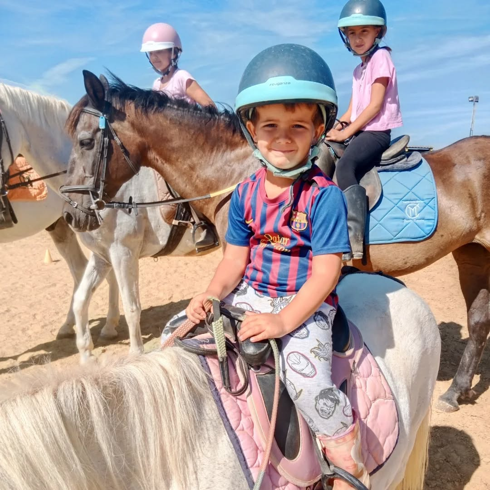
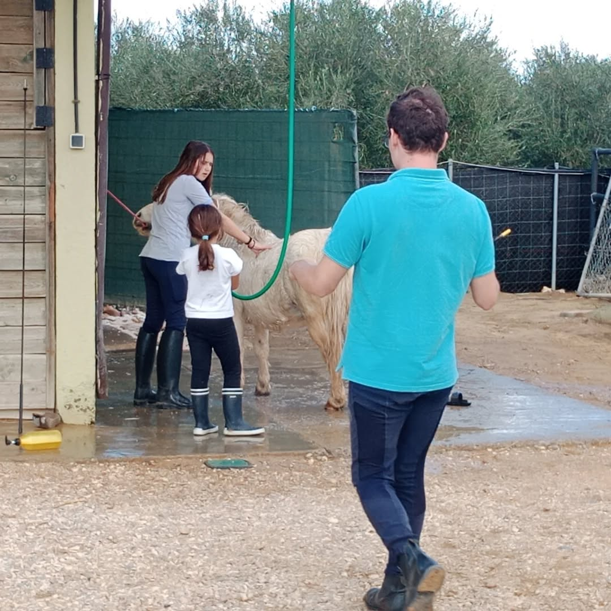
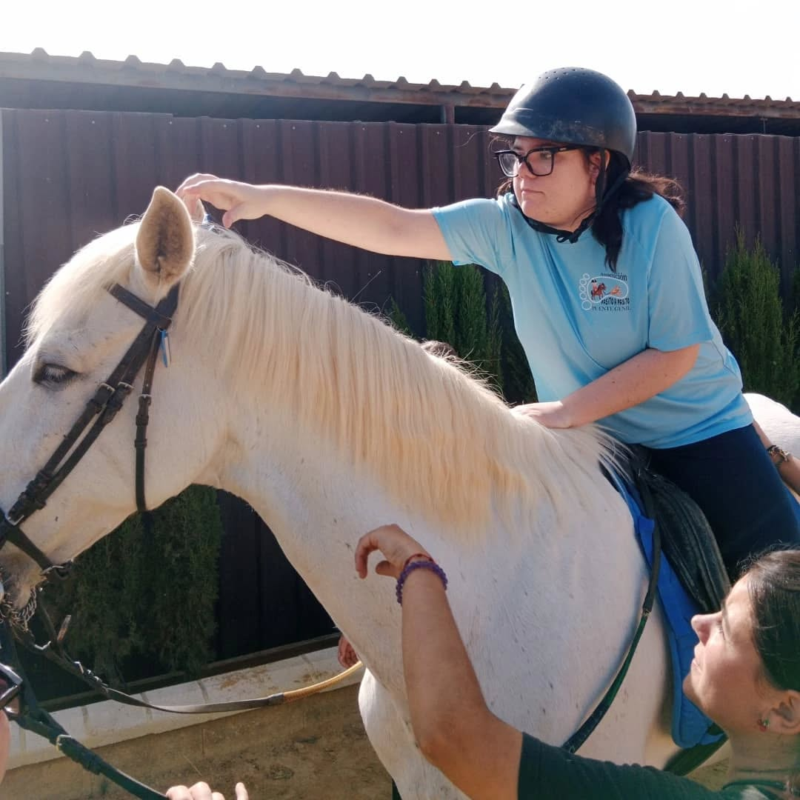
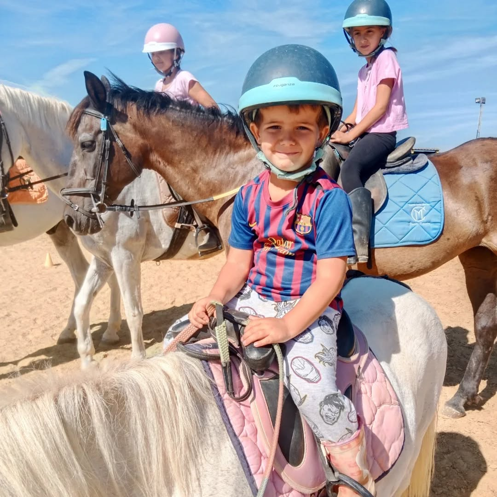
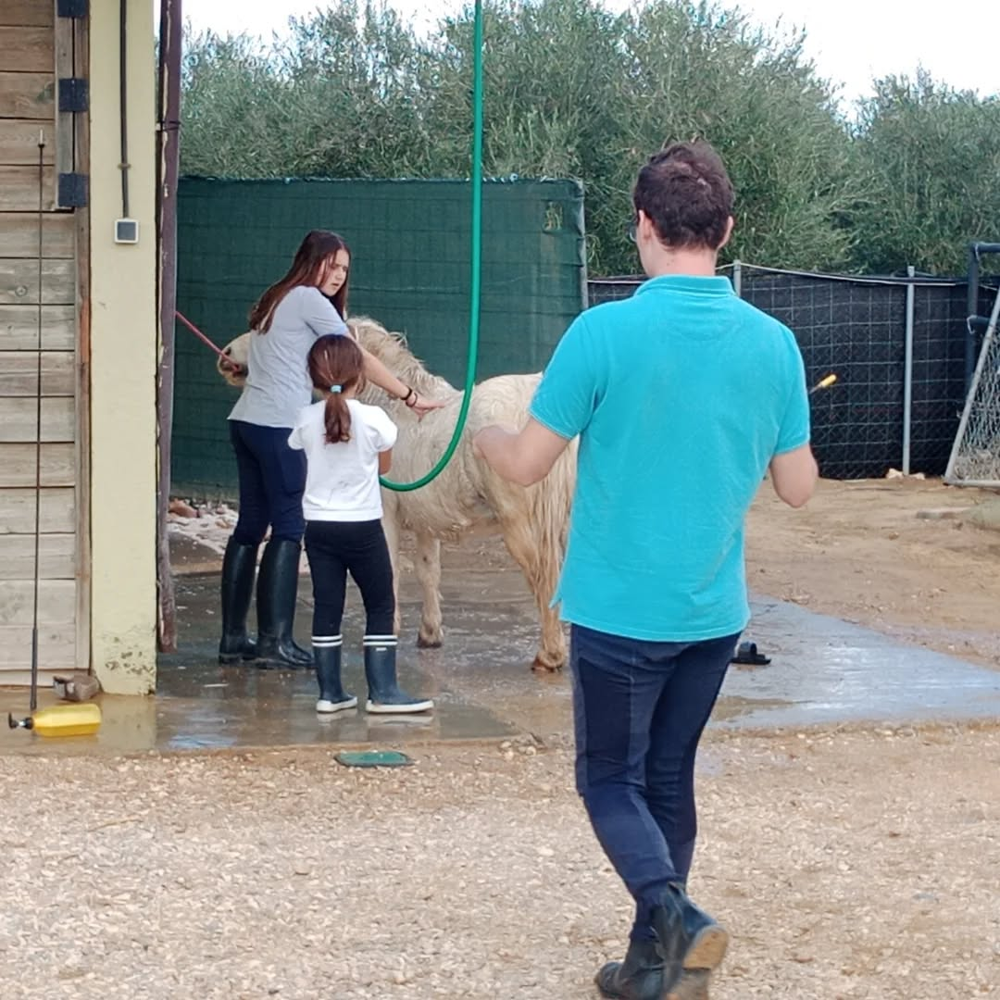
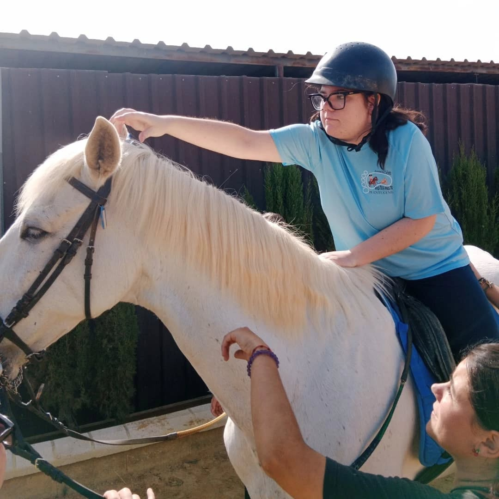

Eventos Especiales
Un entorno único rodeado de naturaleza y caballos para celebrar los momentos más importantes de tu vida. Comuniones, eventos de empresa y celebraciones inolvidables.
Un entorno único rodeado de naturaleza y caballos para celebrar los momentos más importantes de tu vida. Comuniones, eventos de empresa y celebraciones inolvidables.
Regala equitación y crea recuerdos únicos para ese día tan especial.
Sesiones fotográficas profesionales en un entorno natural incomparable.
Eventos corporativos y team building en un espacio diferente y exclusivo.
Se acerca ese gran día tan importante para niños, padres y familiares. Muchas veces no sabemos qué regalar en una ocasión tan especial...
Desde el Centro Ecuestre Yeguada Carmen Martínez te proponemos una idea diferente, original e inolvidable: regalar equitación.
Ofrecemos un Bono de Curso de Equitación pensado especialmente para niños que realizan la comunión, donde aprenderán a montar a caballo y, además, reforzarán valores como el respeto, el trabajo, la voluntad y la responsabilidad.
Ofrecemos la posibilidad de realizar un reportaje fotográfico gratuito en nuestras instalaciones, creando imágenes únicas en un entorno incomparable.
Adquieres “Regala Equitación” o uno de nuestros cursos (mínimo 4 clases)
El niño ya es alumno del centro
Cesión gratuita de caballos e instalaciones durante ~2 horas
Preparación previa de los caballos: ducha, peinado y cuidado
Acondicionamiento de las instalaciones para que todo luzca impecable
Preparación de espacios exclusivos para fotografías
Acompañamiento del niño durante todo la sesión
Personal especializado presente para garantizar seguridad
Preparación previa de los caballos: ducha, peinado y cuidado
 





Ofrecemos un entorno natural y tranquilo, ideal para desconectar del ambiente habitual de oficina, fomentar la cohesión de equipo y celebrar encuentros profesionales en un espacio diferente y exclusivo.
Perfecto para comidas corporativas, reuniones de trabajo, encuentros de equipo o jornadas de convivencia. El entorno ecuestre y natural aporta un valor añadido que transforma cualquier evento profesional en una experiencia memorable.